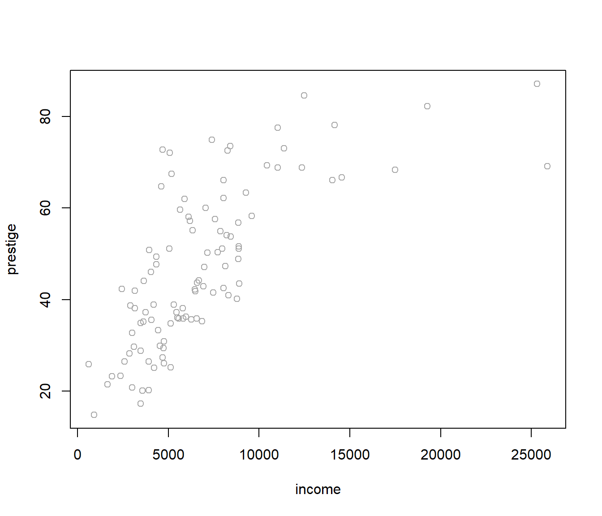
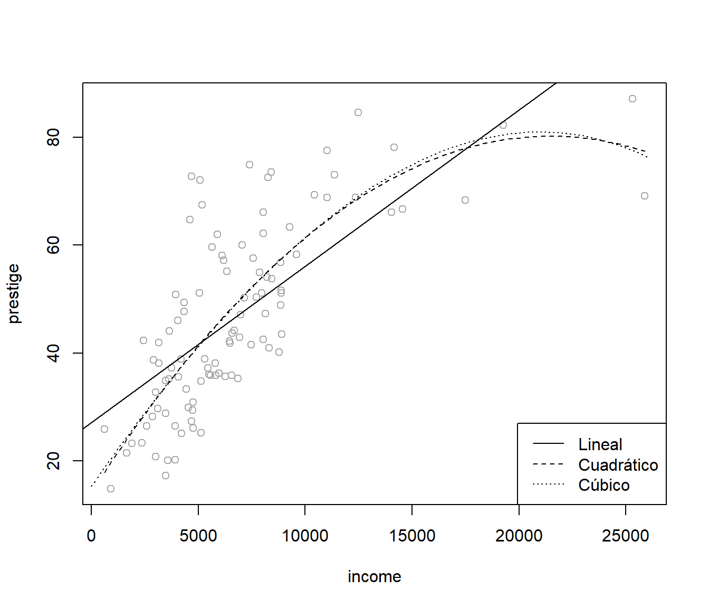
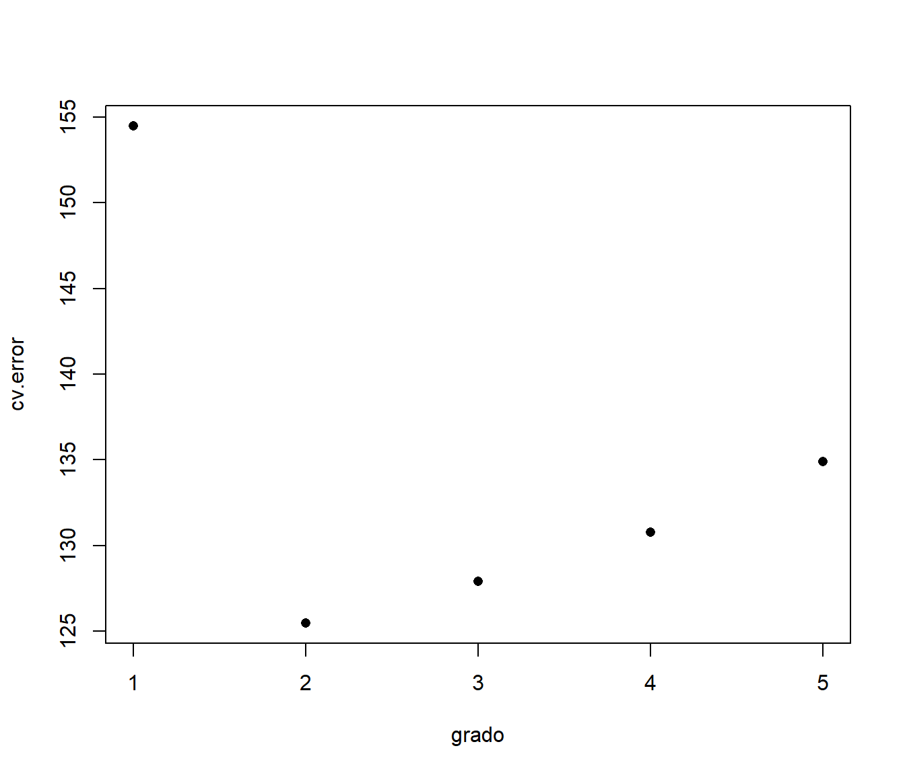
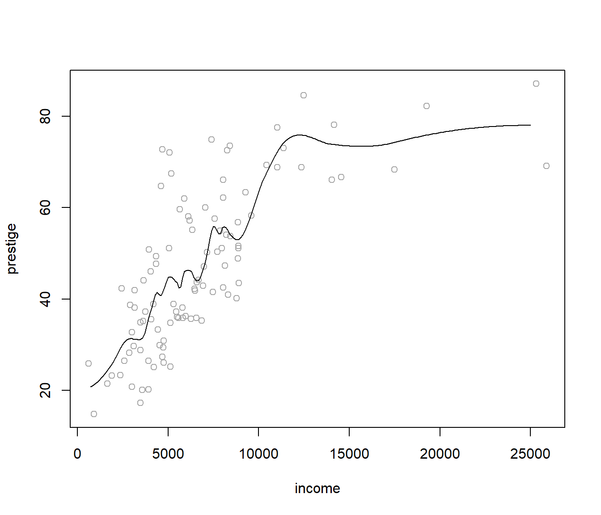
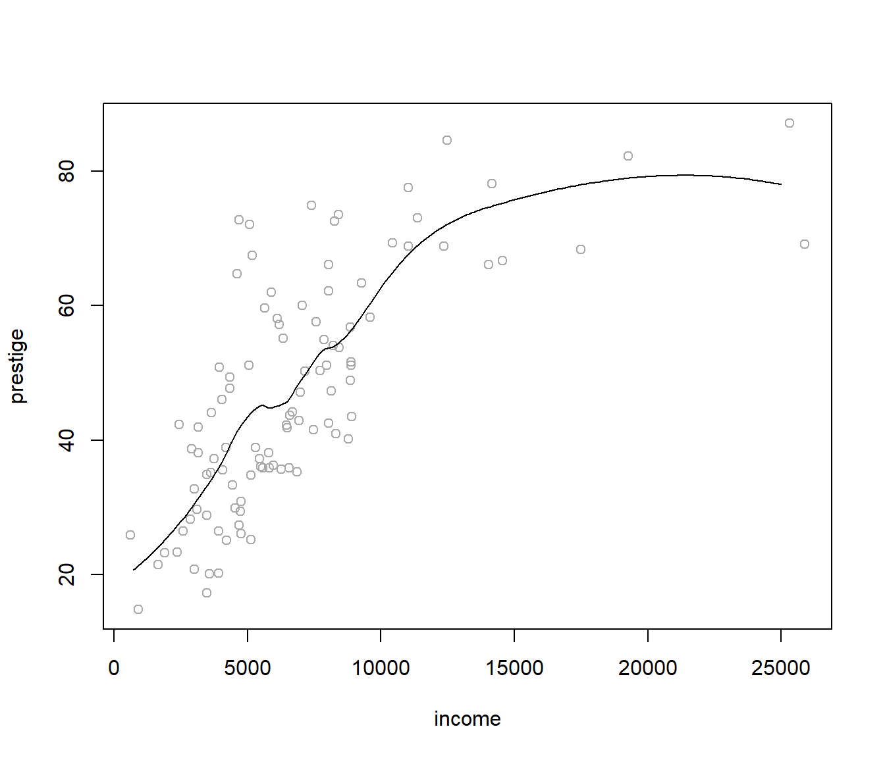
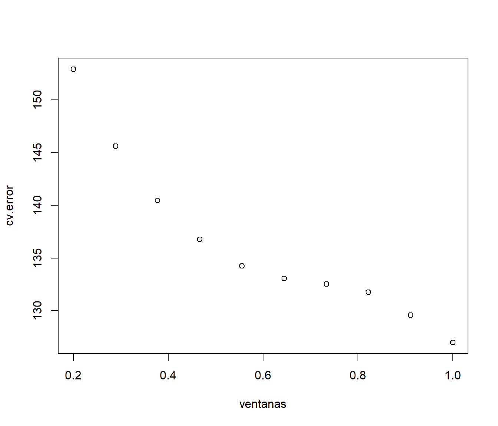

11.4 Aplicación: validación cruzada
Si deseamos evaluar la calidad predictiva de un modelo, lo ideal es disponer de suficientes datos para poder hacer dos grupos con ellos: una muestra de entrenamiento y otra de validación. Cuando hacer esto no es posible, disponemos como alternativa de la validación cruzada, una herramienta que permite estimar los errores de predicción utilizando una única muestra de datos. En su versión más simple (llamada en inglés leave-one-out):
se utilizan todos los datos menos uno para realizar el ajuste, y se mide su error de predicción en el único dato no utilizado;
a continuación se repite el proceso utilizando, uno a uno, todos los puntos de la muestra de datos;
y finalmente se combinan todos los errores en un único error de predicción.
El proceso anterior se puede generalizar repartiendo los datos en distintos grupos, más o menos del mismo tamaño, y sustituyendo en la explicación anterior dato por grupo.
11.4.1 Primer ejemplo
Cuando disponemos de unos datos y los queremos ajustar utilizando un modelo que depende de un parámetro, por ejemplo un modelo de regresión polinómico que depende del grado del polinomio, podemos utilizar la validación cruzada para seleccionar el grado del polinomio que debemos utilizar.
Veámoslo utilizando las variables income y prestige de la base de datos Prestige, incluida en el paquete car.
library(car)
plot(prestige ~ income, data = Prestige, col = 'darkgray')
Representemos, gráficamente, los ajustes lineal, cuadrático y cúbico.
plot(prestige ~ income, data = Prestige, col = 'darkgray')
# Ajuste lineal
abline(lm(prestige ~ income, data = Prestige))
# Ajuste cuadrático
modelo <- lm(prestige ~ income + I(income^2), data = Prestige)
parest <- coef(modelo)
curve(parest[1] + parest[2]*x + parest[3]*x^2, lty = 2, add = TRUE)
# Ajuste cúbico
modelo <- lm(prestige ~ poly(income, 3), data = Prestige)
valores <- seq(0, 26000, len = 100)
pred <- predict(modelo, newdata = data.frame(income = valores))
lines(valores, pred, lty = 3)
legend("bottomright", c("Lineal","Cuadrático","Cúbico"), lty = 1:3)
Vamos a escribir una función que nos devuelva, para cada dato (fila) de Prestige, la predicción en ese punto ajustando el modelo con todos los demás puntos.
cv.lm <- function(formula, datos) {
n <- nrow(datos)
cv.pred <- numeric(n)
for (i in 1:n) {
modelo <- lm(formula, datos[-i, ])
cv.pred[i] <- predict(modelo, newdata = datos[i, ])
}
return(cv.pred)
}Por último, calculamos el error de predicción (en este caso el error cuadrático medio) en los datos de validación. Repetimos el proceso para cada valor del parámetro (grado del ajuste polinómico) y minimizamos.
grado <- 1:5
cv.error <- numeric(5)
for(p in grado){
cv.pred <- cv.lm(prestige ~ poly(income, p), Prestige)
cv.error[p] <- mean((cv.pred - Prestige$prestige)^2)
}
plot(grado, cv.error, pch=16)
grado[which.min(cv.error)]## [1] 211.4.2 Segundo ejemplo
En este segundo ejemplo vamos a aplicar una técnica de modelado local al problema de regresión del ejemplo anterior. El enfoque es data-analytic en el sentido de que no nos limitamos a una familia de funciones que dependen de unos parámetros (enfoque paramétrico), que son los que tenemos que determinar, sino que las funciones de regresión están determinadas por los datos. Aun así, sigue habiendo un parámetro que controla el proceso, cuyo valor debemos fijar siguiendo algún criterio de optimalidad.
Vamos a realizar, utilizando la función loess, un ajuste polinómico local
robusto, que depende del parámetro span, que podemos interpretar como la
proporción de datos empleada en el ajuste.
Utilizando un valor span=0.25:
plot(prestige ~ income, Prestige, col = 'darkgray')
fit <- loess(prestige ~ income, Prestige, span = 0.25)
valores <- seq(0, 25000, 100)
pred <- predict(fit, newdata = data.frame(income = valores))
lines(valores, pred)
Si utilizamos span=0.5:
plot(prestige ~ income, Prestige, col = 'darkgray')
fit <- loess(prestige ~ income, Prestige, span = 0.5)
valores <- seq(0, 25000, 100)
pred <- predict(fit, newdata = data.frame(income = valores))
lines(valores, pred)
Nuestro objetivo es seleccionar un valor razonable para span, y lo vamos a
hacer utilizando validación cruzada y minimizando el error cuadrático medio
de la predicción en los datos de validación.
Utilizando la función
cv.loess <- function(formula, datos, p) {
n <- nrow(datos)
cv.pred <- numeric(n)
for (i in 1:n) {
modelo <- loess(formula, datos[-i, ], span = p,
control = loess.control(surface = "direct"))
# control = loess.control(surface = "direct") permite extrapolaciones
cv.pred[i] <- predict(modelo, newdata = datos[i, ])
}
return(cv.pred)
}y procediendo de modo similar al caso anterior:
ventanas <- seq(0.2, 1, len = 10)
np <- length(ventanas)
cv.error <- numeric(np)
for(p in 1:np){
cv.pred <- cv.loess(prestige ~ income, Prestige, ventanas[p])
cv.error[p] <- mean((cv.pred - Prestige$prestige)^2)
# cv.error[p] <- median(abs(cv.pred - Prestige$prestige))
}
plot(ventanas, cv.error)
obtenemos la ventana “óptima” (en este caso el valor máximo):
span <- ventanas[which.min(cv.error)]
span## [1] 1y la correspondiente estimación:
plot(prestige ~ income, Prestige, col = 'darkgray')
fit <- loess(prestige ~ income, Prestige, span = span)
valores <- seq(0, 25000, 100)
pred <- predict(fit, newdata = data.frame(income = valores))
lines(valores, pred)